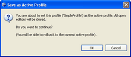
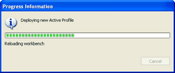
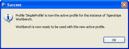

Deploying a Profile
The Tigerstripe Project Perspective allows you to:
- Save the current profile as the active profile.
- Roll back to a previous active profile
Note: You can only roll back one profile.
- Reload the factory default profile settings.
The above deployment options are available from the Overview tab in your Project Profile Perspective and are highlighted in red in the following image.

To make the current profile active:
- Select the Save as active profile and reload link (#1 above). The Save as Active Profile dialog box opens.

- Click OK to continue or click Cancel to return to the Profile Perspective without deploying the current profile. The Progress Information dialog box appears showing the progress of your deployment.

- When complete, the Success dialog box opens. Click OK.

The current Project Profile is the active project for all Tigerstripe Workbench projects.
Related Topics
Profile Perspectives
The General Tab
The Annotation Tab
The Primitive-Type Tab
The Artifacts Tab
Project Profiles
Rolling Back
Loading Factory Defaults
 Project Profiles
Project Profiles
© copyright 2005, 2006, 2007 Cisco Systems, Inc. - All rights reserved